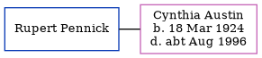

Rupert Pennick, the husband of Cynthia Roberta Austin (the third cousin once-removed on the father's side of Nigel Horne), and married Cynthia in Surrey, England around Nov 19441.
Citations
England & Wales Marriages 1837-2005 - Findmypast
Family Tree

Generated by ged2site. Last updated on Jul 3, 2024